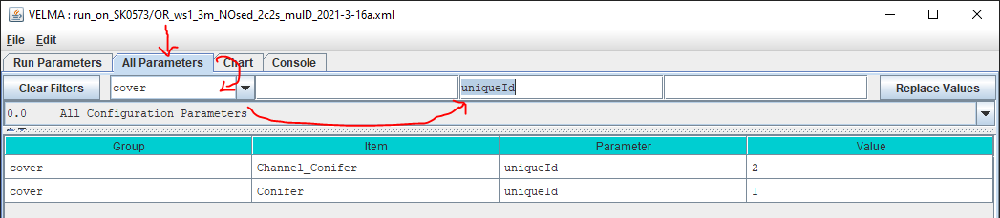

Configuring the Default Sediment Model
Overview
Starting with version 2.1.0.36 the VELMA simulator contains an implementation of Bob McKane's Prototype Sediment Model for VELMA. Like the model, the implementation is a prototype, albeit functional within its limitations.
Simulation configurations that include a sediment model parameterization model computes and reports "Loss" amounts simulating sediment movement from ridge to stream, corresponding to amounts "lost" at the watershed outlet on a per-day basis.
The model also provides a variety of spatially-explicit, cell-specific data results.
See the Sediment Output Data Summary for details.
The sediment mechanism changes the spatial distribution of detrius leaf and top-layer humus amounts over the course a simulation run relative to a simulation run of the same configuration without the sediment mechanism. Those differences directly affect VELMA cover, soil (for humus) and chemistry calculations, and through them, indirectly affect water flow.
Limitations
Be aware of the following limitations regarding the sediment model and its use.
-
The sediment model only simulates cell-to-cell movement of detritus leaf and humus amounts in solution. It does not simulate soil particulates.
-
The sediment model is not currently supported by VELMA's Water Drains disturbance mechanism.
If you configure a simulation to include both a the sediment model and a water drains disturbance, the water drains disturbance will ignore sediment amounts during transport. Because of this "disconnect", do not configure a simulation for both water drains and sediment. -
If you configure a multiple-map simulation configuration that utilizes the sediment model, all simulation configurations that are part of the overall multiple-map simulation effort must be configured with the same set of cover and soil parameterizations, and all must use the same
uniqueIdanduniqueNamevalues within those parameterizations. -
Sediment model Loss results suffer the same reduction in accuracy under (multiple-map + multiple-scale) simulation configurations that runoff and contaminant and chemisty loss results do.
Requirements
- VELMA v2.1.0.36 or later.
- A simulation configuration that does not include a Water Drains Disturbance parameterization (per Limitations above).
Adding and Configuring the Sediment Model
In JVelma, click the Edit --> Set Sediment Model --> Default Sediment Model menu item.
This adds the sediment parameterization group to the configuration, shifts to JVelma's GUI to display "All Parameters" tab, and sets the selector-filter to "sediment".
The sediment group's parameters initially have these default values:
| Group | Item | Parameter | Value |
|---|---|---|---|
| sediment | DefaultSedimentModel | enableCategorizedLossTransfersReport | false |
| sediment | DefaultSedimentModel | modelClass | gov.epa.velmasimulator.DefaultSedimentModel |
| sediment | DefaultSedimentModel | setBiomassLeafTransportScalarB | |
| sediment | DefaultSedimentModel | setDetritusLeafCtoNcorrectionConstant | |
| sediment | DefaultSedimentModel | setDetritusLeafDryWeight | |
| sediment | DefaultSedimentModel | setDetritusLeafMmPerH2Omm | |
| sediment | DefaultSedimentModel | setDetritusLeafToHumusTransportRatioKs | |
| sediment | DefaultSedimentModel | setDetritusLeafTransportScalarB | |
| sediment | DefaultSedimentModel | setFaccTransportScalarA | 1.0 |
| sediment | DefaultSedimentModel | setFaccTransportScalarB | 0.5 |
| sediment | DefaultSedimentModel | setHumusMmPerH2Omm | |
| sediment | DefaultSedimentModel | setSlopeTransportScalarA | 1.0 |
| sediment | DefaultSedimentModel | setSlopeTransportScalarB | 0.5 |
| sediment | DefaultSedimentModel | uniqueId | 1 |
| sediment | DefaultSedimentModel | uniqueName | DefaultSedimentModel |
- No parameter values may be left blank (even though several parameter values default as blank).
Blank default values indicate parameters that JVelma does not know how to provide a default for. - The Facc and Slope parameters' default values should be treated as placeholders: they are almost certain to require adjustment for proper calibration of a specific simulation site.
Cover and Soil Specific Parameters
Several sediment model parameters require the specification of distinct values for each and every cover or soil type specified in the simulation configuration.
| Parameter | Requires a value for each ... |
|---|---|
| setBiomassLeafTransportScalarB | cover uniqueId |
| setDetritusLeafCtoNcorrectionConstant | cover uniqueId |
| setDetritusLeafDryWeight | cover uniqueId |
| setDetritusLeafMmPerH2Omm | cover uniqueId |
| setDetritusLeafToHumusTransportRatioKs | cover (not soil) uniqueId |
| setDetritusLeafTransportScalarB | cover uniqueId |
| setHumusMmPerH2Omm | soil uniqueId |
Multiple parameter values are specified for these parameters as a sequence of whitespace-separated ID:value pairs.
Example
Suppose a simulation configuration has 3 cover types, withuniqueIdparameters1,3, and501.
A valid parameterization for thesetBiomassLeafTransportScalarBparameter might be specified as:1:0.40 3:075 501:0.05
The ID:value notation must be used even when only one cover and/or soil type are specified.
Example
Suppose a simulation configuration specifies only one soil type, withuniqueIdof7.
A valid parameter value forsetHumusMmPerH2Ommmight be7:0.30, however simply specifying0.30instead would be invalid.
JVelma's "All Parameters" tab can be used to determine the simulation configuration's cover and soil uniqueId values:
- Click the "All Parameters" tab.
- Click-select "cover" (or "soil") in the drop-selection filter.
- Type "uniqueId" (case sensitive) into the middle ("Parameter" column) text-selection filter textbox and press either the "Tab" or "Enter" key.
Example

Parameter Details
enableCategorizedLossTransfersReport
Determines whether the sediment model emits additional detailed loss data
as part of the simulation results.
When set true per-step counts and amounts for sediment loss transfers are reported as csv data rows in the simulation's global trace log file.
The csv data rows are identified by a keytext column: LOSS_TRANSFER_REPORT.
Each data row reports sediment transfer counts and amounts for the cell-to-cell transfer categories that comprise daily sediment loss values.
This parameter's default value is false.
modelClass
This parameter's value is the actual Java class name of this sediment model.
It should be set to the correct value (gov.epa.velmasimulator.DefaultSedimentModel) by default.
Do not change this parameter's value unless it is not set to the default value -- if it is not, then setting it to the default value is not only allowed, but required.
setBiomassLeafTransportScalarB
The base ("B") parameter used to compute Biomass Leaf transport scalar values via the following exponential equation:
gNm2BiomassLeafAmount
biomassLeafTransportScalar = biomassLeafTransportScalarB^
Each "B" parameter specified must be within the range (0.0, 1.0).
This parameter is cover-specific.
Specify a uniqueId:biomassLeafTransportScalarB pair for each cover type specfied for this simulation.
Specify the pairs as a whitespace-delineated sequence for this parameter.
Example
A simulation with 3 cover types, and uniqueId values of 1, 7, and 23 might specify the following for this parameter:1:0.40 7:0.15 23:0.58
setDetritusLeafCtoNcorrectionConstant
Correction-constant multiplier for the C/N ratio of DetritusLeaf.
Corrects the C/N ratio for:
- The presence of fine wood (high C/N) in forest floor.</li>
- VELMA's lack of live foliage retranslocation prior to litterfall.</li>
This parameter is cover-specific.
Specify a uniqueId:detritusLeafCtoNcorrectionConstant pair for each cover type specfied for this simulation.
Specify the pairs as a whitespace-delineated sequence for this parameter.
Each uniqueId:detritusLeafCtoNcorrectionConstant pair specified must have detritusLeafCtoNcorrectionConstant value greater than 0.
Example
A simulation with 3 cover types, and uniqueId values of 1, 7, and 23 might specify the following for this parameter:1:1.0 7:1.5 23:2.0
setDetritusLeafDryWeight
Detritus Leaf Dry Weight values (in units of cm3/g).
Known detritus Leaf Dry Weight values are required for conversion between gN/m2 and mm amounts: these must be provided from appropriate literature or user-experience.
This parameter is cover-specific.
Specify a uniqueId:dryWeightValue pair for each cover type specfied for this simulation.
Specify the pairs as a whitespace-delineated sequence for this parameter.
Example
A simulation with 3 cover types, and uniqueId values of 1, 7, and 23 might specify the following for this parameter:1:0.20 7:0.15 23:0.48
setDetritusLeafMmPerH2Omm
The number of mm of Detritus Leaf that can be transported by 1 mm of scalar-adjusted lateral-out water movement.
This parameter is cover-specific.
Specify a uniqueId:detritusLeafMmPerH2Omm pair for each cover type specfied for this simulation.
Specify the pairs as a whitespace-delineated sequence for this parameter.
Each detritusLeafMmPerH2Omm value specified must be greater than zero.
Example
A simulation with 3 cover types, and uniqueId values of 1, 7, and 23 might specify the following for this parameter:1:1.8 7:1.5 23:2.0
setDetritusLeafToHumusTransportRatioKs
The ("Ks") parameter of the Detritus Leaf-to-Humus transport ratio equation.
The ratio is computed in terms of Detritus Leaf alone, using a Monod equation with the form:
ratio = ratioMax * (mm of detritus leaf) / (detritus leaf Ks + mm of detritus leaf))
Note: ratio's value must not exceed 1.0, so ratioMax is fixed at 1.0, never changes, and is omitted from the actual calculation.
This parameter is cover-specific.
Specify a uniqueId:Ks pair for each cover type specfied for this simulation.
Specify the pairs as a whitespace-delineated sequence for this parameter.
Each "Ks" parameter value must be zero or greater."
Example
A simulation with 3 cover types, and uniqueId values of 1, 7, and 23 might specify the following for this parameter:1:2.00 7:1.50 23:0.80
setDetritusLeafTransportScalarB
The base ("B") parameter used to compute Detritus Leaf transport scalar values via the following exponential equation:
detritusLeafTransportScalar = detritusLeafTransportScalarB^gNm2DetritusLeafAmount
This parameter is cover-specific.
Specify a uniqueId:detritusLeafTransportScalarB pair for each cover type specfied for this simulation.
Specify the pairs as a whitespace-delineated sequence for this parameter.
Each "B" parameter specified must be within the range (0.0, 1.0)
Example
A simulation with 3 cover types, and uniqueId values of 1, 7, and 23 might specify the following for this parameter:1:0.65 7:0.70 23:0.40
setFaccTransportScalarA
The ("a") parameter of the flow accumulation (facc) transport scalar's equation.
The slope transporation scalar is computed using a logistic equation with the form:
y = exp(-a + b * faccValue) / (1 + exp(-a + b * faccValue))
The function will negate the provided "a" value: do NOT set "a" as a negative value.
setFaccTransportScalarB
The ("b") parameter of the flow accumulation (facc) transport scalar's equation.
The slope transporation scalar is computed using a logistic equation with the form:
y = exp(-a + b * faccValue) / (1 + exp(-a + b * faccValue))
The "b" parameter's value must be in the range [0, 1), and 0 is deprecated.
VELMA logs a warning when "b" equals 0, but permits the simulation to run.
setHumusMmPerH2Omm
The number of mm of Humus that can be transported by 1 mm of scalar-adjusted lateral-out water movement.
This parameter is soil-specific.
Specify a uniqueId:HumusMmPerH2Omm pair for each cover type specfied for this simulation.
Specify the pairs as a whitespace-delineated sequence for this parameter.
Each humusMmPerH2Omm value specified must be greater than zero."
Example
A simulation with 2 soil types, and uniqueId values of 2 and 8 might specify the following for this parameter:2:2.5 8:4.0
setSlopeTransportScalarA
The ("a") parameter of the slope transport scalar's equation.
The slope transporation scalar is computed using a logistic equation with the form:
y = exp(-a + b * slopePercent) / (1 + exp(-a + b * slopePercent))
The function will negate the provided "a" value: do NOT set "a" as a negative value.
setSlopeTransportScalarB
The "b" parameter of the slope transport scalar's equation.
The slope transporation scalar is computed using a logistic equation with the form:
y = exp(-a + b * slopePercent) / (1 + exp(-a + b * slopePercent))
The "b" parameter's value must be in the range [0, 1), and 0 is deprecated. VELMA logs a warning when "b" == 0, but permits the simulation to run.
uniqueId
The unique identification index number for this sediment model instance.
JVelma sets this parameter to a valid default value automatically: if this contaminant group is added via JVelma's GUI,
there should be no need to modify the existing value for this parameter.
If you modify the default value, you must abide by the following:
- The
uniqueIdvalue must be unique among all sediment models specified for a given simulation configuration. - Do NOT assign
uniqueIda value less than zero; doing so signals "not initialized" to the VELMA Simulator.
uniqueName
The unique name for this sediment model instance.
JVelma sets this parameter to a valid default value automatically: if this contaminant group is added via
JVelma's GUI, there should be no need to modify the existing value for this parameter.
Changing uniqueName's value is permitted, but is also discouraged.
If you modify the default value, you must abide by the following:
- The value text must contain only alphabet characters, digits, and the underscore and hyphen characters.
- Do NOT set
uniqueNameblank (""); doing so signals "not initialized" to the VELMA Simulator.
Removing the Sediment Model from a Simulation Configuration
To remove the sediment model parameterization from simulation configuration,
in JVelma, click the Edit --> Set Sediment Model --> NO Sediment Model menu item.
Warning: this will immediately remove the sediment parameterization group from the configuration!
If you want to retain the sediment parameterization values for future reference,
consider saving a copy of the configuration under a different name prior to removing the sediment group.
Appendix A: Configuration Tips
Shutting Off Either the Slope or Facc Transport Scalar
Although not recommended, it is possible to "shut off" the effect of either the slope or facc transport scalar by setting the "a" and "b" parameters so that the logistic equation evaluates to zero regardless of the respective slope-percent or flow-accumulation value. Due to the nature of IEEE floating-point arithmetic, the following parameterization ensures the slope or facc transport scalar will always evaluate to zero:
- Choose either the slope or facc transport scalar to "shut off".
- Set that scalar's "a" parameter to "9999.0".
- Set that scalar's "b" parameter to "0.0".
The sediment transport calculation uses min((slopeTransportScalar + faccTransportScalar), 1.0) as a multiplicative factor,
so when either the slope or facc scalar is zero, the other, non-zero scalar has sole effect.
(This is why zeroing both slope and facc scalars is "wrong": min((0.0 + 0.0), 1.0)
would have the effect of always "maxing out" the slope+facc scalar factor.